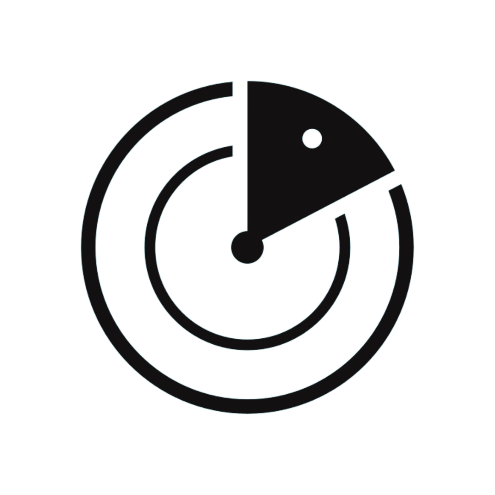

VelibTracker
La source la plus complète et la plus précises de statistiques sur Vélib, le système de vélos en libre service de Paris. Site en développement. Je vais essayer d'ajouter de nouvelles fonctionnalités chaque jour. Ce site n'est en aucun cas affilié à Smovengo, à Vélib' Métropole, ou à une quelconque organisation.
|
Électriques
⚡🚲
|
Mécaniques
🦵🚲
|
Total |
| En route |
2561 |
1391 |
3952 |
| En station |
6462 |
10715 |
17177 |
| Total |
9023 |
12106 |
21129 |